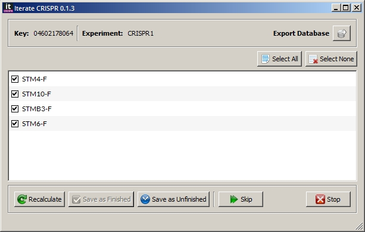

Version: 0.1.4
A program to assist in the analysis of CRISPR sequence experiments in BioNumerics. Assembly is done using predefined primers. The finished status of each primer is saved within the program.
Download (x86 version): http://www.python.org/download/releases/2.6.6/
Download (x86 version for Python 2.6): http://www.riverbankcomputing.co.uk/software/pyqt/download
Clone repository
git clone git@github.com:vkvn/bionumerics_scripts.git
Build and install
cd bionumerics_scripts/itcrispr
python setup.py build
python setup.py install
Change configuration in
C:\Python26\Lib\site-packages\itcrispr\itcrispr.cfg
DATABASES, EXPERIMENTS and PRIMER_PATH are all required for the program to work.
DATABASES
The database name as in BioNumerics. Multiple databases can be specified as comma-separated values. This option is to prevent the script from being executed accidentally in other databases.
EXPERIMENTS
List of CRISPR sequence experiments - comma-separated.
PRIMER_PATH
PATH to the directory containing primer files in text format. File extension should be .txt and file should contain only the sequence (FASTA and other formats not supported).
Select entries in BioNumerics. If no selection is made, program runs through all entries in the database.
Run script using the Script --> Run script from file option in BioNumerics. Navigate to the C:\Python26\Scripts folder and select run_itcrispr.py
Note
As easier method to run the script would be to add a button to the toolbar. Steps for doing this is described in Add a button to the toolbar.
An assembly will be done using the CRISPR sequences and primers. A dialog window will then be displayed with the list of primers that aligned with the sequences. Double-click on a primer to navigate to that region in the assembler.
If you consider an experiment for an entry as finished, click the Save as Finished button. No primer should be checked. Use the Select None button to deselect all primers.
To save an experiment as unfinished, check the primers for regions that need to be repeated and click the Save as Unfinished button.
If you made some changes in the assembler window, use the Recalculate button to redo the assembly.
Use the Skip button to redo this entry at a later time.
Use the Export Database button to export the entire database to a CSV file.
Stop button will terminate the program.
This needs to be done whenever the program is updated!
Copy
C:\Python26\Lib\site-packages\itcrispr\itcrispr-menu.bns to
the scripts home directory under your BioNumerics Home directory. For example,
C:\Users\vimal\BioNumerics\Data\Scripts Home\
Load this file in the BNS Script editor
Script --> BNS Script editor
followed by
File --> Load Script
Open File --> Attachments and click Add new
Select C:\Python26\Scripts\run_itcrispr.py and click Open. Enter run_itcrispr in the dialog that appears and click OK.
Save the script.
Restart BioNumerics. An icon should now be available in the toolbar. Click this icon to launch the program.
Primer files are plain text files with just the sequence of the primer.
Add or remove primers to/from the location specified in the configuration file - the PRIMER_PATH variable.